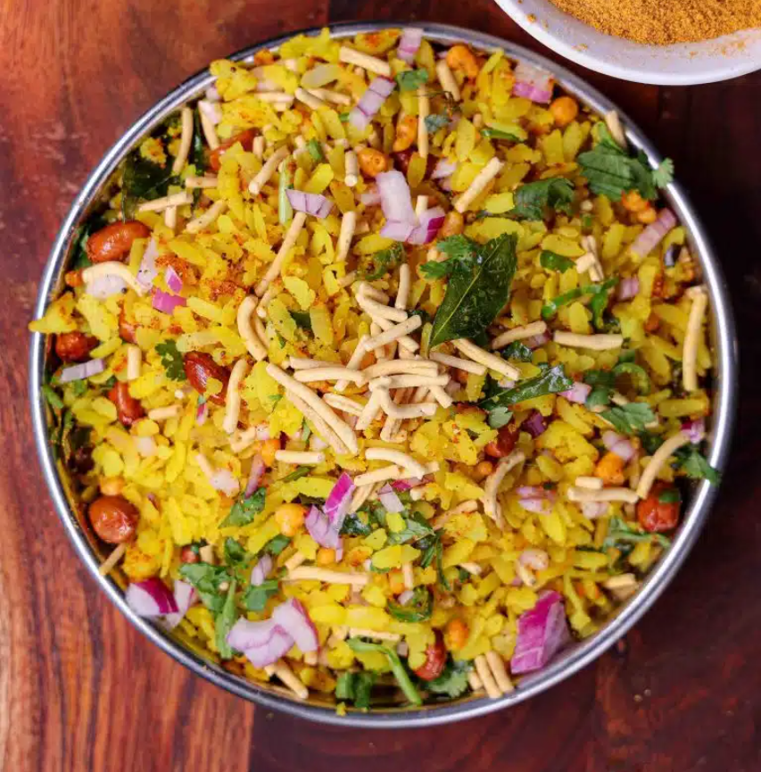

Indori Poha

Indori Poha is a popular street food from Indore,
a city in the Indian state of Madhya Pradesh. It
is a flattened rice snack that is cooked in steam,
giving it a distinct taste, softness, and flavor.
The dish typically consists of steamed poha (flattened rice)
served with a unique combination of jalebi (poha-jalebi combined),
sev, usal, sliced onions, and fennel seeds
Ingredients
- Poha
- Sugar
- Salt
- Oil
- Mustrad Seeds
- Fennel Seeds
- Onions
- Indori Sev
- Coriander Leaves
- Masala Bondi
Steps
- Prepare the poha
- Steam the poha
- Heat oil and spice mix
- Add Poha and stir
- Top with Indori Sev
- Serve